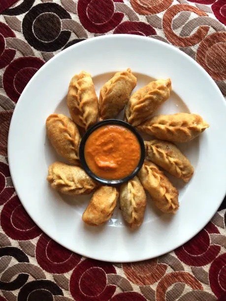

Home
Momo

Description
মোমো হলো তিব্বতি ও নেপালি ডাম্পলিং জাতীয় জনপ্রিয় খাবার।
পাতলা ময়দার খোলের ভিতরে মাংস বা সবজি পুর ভরে ভাপে সেদ্ধ করে এটি প্রস্তুত করা হয়।
Ingredients
For Dough:
- ময়দা - ২ কাপ
- লবণ - ১/২ চা চামচ
- পানি - পরিমাণমতো
For Filling:
- মুরগির কিমা / সবজি কুচি - ১ কাপ
- পেঁয়াজ কুচি - ২ টেবিল চামচ
- রসুন বাটা - ১ চা চামচ
- আদা বাটা - ১ চা চামচ
- সয়া সস - ১ টেবিল চামচ
- গোলমরিচ গুঁড়া - ১/২ চা চামচ
- লবণ - স্বাদমতো
Recipe (Steps)
- ময়দা, লবণ ও পানি দিয়ে নরম ডো তৈরি করে ২০ মিনিট ঢেকে রাখো।
- পুরের সব উপকরণ ভালোভাবে মিশিয়ে নাও।
- ডো ছোট ছোট বল করে বেলে পাতলা রুটি আকারে তৈরি করো।
- মাঝখানে পুর দিয়ে পছন্দমতো আকারে ভাঁজ করো।
- স্টিমারে ১০-১২ মিনিট ভাপে সেদ্ধ করো।
- চাটনি সহ গরম গরম পরিবেশন করো।